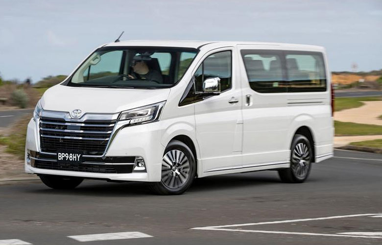

CHO THUÊ XE Ô TÔ DU LỊCH 9 CHỖ GIÁ RẺ TẠI TPHCM
Nhu cầu thuê xe 9 chỗ tự lái ngày càng tăng cao tại TPHCM và có cầu thì chắc chắn sẽ có cung. Do đó, bạn không khó để tìm kiếm và lựa chọn đơn vị cho thuê xe 9 chỗ tự lái tại các Quận, Huyện TPHCM. Chỉ cần thao tác đơn giản trên thanh tìm kiếm Google: thuê xe 9 chỗ tự lái, bạn sẽ nhận được hàng trăm, hàng nghìn kết quả trả về chỉ sau chưa đầy 1s. Thế nhưng, liệu rằng trong số đó, bạn có biết được đơn vị nào cho thuê xe tự lái uy tín, xứng đáng cho bạn chọn mặt gửi vàng để đồng hành trong chuyến đi? Theo đó, công ty thuê xe du lịch 9 chỗ của công ty chúng tôi là một trong những cái tên mà bạn nên ưu tiên lựa chọn hàng đầu bởi khi thuê xe 9 chỗ tự lái tại đây, bạn sẽ nhận được nhiều chương trình ưu đãi có giá trị, chất lượng, giá hợp lý.
Mục Đích Thuê Xe 9 Chỗ Tự Lái
Theo đó, hiện nay, khách hàng thuê xe 9 chỗ tự lái với nhiều mục đích khác nhau, phổ biến nhất là: thuê xe 9 chỗ để đi du lịch cùng gia đình, đồng nghiệp, nhóm bạn thân; thuê xe 9 chỗ để đi công tác; thuê xe cưới hỏi;…. Tùy vào nhu cầu sử dụng, mục đích thuê mà bạn chọn thuê xe 9 chỗ tự lái phù hợp, tiết kiệm chi phí, đáp ứng hiệu quả công việc 100%. Thị trường cho thuê xe tự lái rất phát triển, bạn không khó để chọn cho mình dòng xe ưng ý để đáp ứng nhu cầu sử dụng.
Ưu Điểm Của Dịch Vụ Thuê Xe 9 Chỗ Tự Lái
Thỏa Đam Mê Trải Nghiệm Dòng Xe Đời Mới
Nhiều khách hàng chưa thực sự cần thiết để đổi xe, hoặc cũng không ít khách hàng chưa có điều kiện tài chính để thay xe mới,… Vì vậy, họ tìm đến với dịch vụ thuê xe 9 chỗ tự lái chỉ để thỏa niềm đam mê trải nghiệm dòng xe đời mới nhất.
Đảm Bảo Sự Riêng Tư Cho Hành Trình
Dịch vụ thuê xe 9 chỗ tự lái giúp bạn đảm bảo được sự riêng tư, làm chủ hành trình hơn so với việc thuê xe 9 chỗ có tài xế. Bạn có thể tự do khám phá những điều thú vị trong suốt chặng đường đi. Bạn tự do dừng tại điểm nào bạn thích, bạn thoải mái lập trình cho chặng đường đi mà không e ngại bị làm phiền bởi người lạ. Đây cũng là một trong những lý do khiến dịch vụ này nhận được sự đón nhận và đánh giá cao từ khách hàng.
Tiết Kiệm Chi Phí
Ngoài ra, nếu là người không cần sử dụng xe nhiều và thường xuyên thì dịch vụ thuê xe 9 chỗ tự lái sẽ giúp bạn tiết kiệm tối đa chi phí. Vì sao? Thay vì bỏ ra hàng chục triệu đồng để nuôi xe hàng tháng, bạn chỉ cần bỏ ra một khoản khá nhỏ để thuê xe 9 chỗ khi cần, đáp ứng yêu cầu công tác ngắn ngày, đi du lịch,… Dịch vụ cho thuê xe 9 chỗ uy tín sẽ hỗ trợ đắc lực cho bạn trong cuộc sống và công việc, vậy thì chẳng có lý do gì để từ chối nhỉ!
Giá Thuê Xe 9 Chỗ Tự Lái Bao Nhiêu?
Bảng Giá Thuê Xe 9 Chỗ Tự Lái Phụ Thuộc Vào Yếu Tố Nào?
Bên cạnh chất lượng, thì giá cả là yếu tố hàng đầu được khách hàng quan tâm. Giá thuê xe 9 chỗ tự lái chịu sự tác động bởi nhiều yếu tố khác nhau, bao gồm: thời gian thuê xe là theo giờ, theo ngày, theo tháng, theo tuần, theo quý hay năm; hành trình chuyến đi; loại xe, thương hiệu xe; theo yêu cầu khách hàng;… Và đặc biệt, giá thuê xe 9 chỗ tự lái không giống nhau giữa các đơn vị cho thuê xe.
Những Dòng Xe 9 Chỗ Nên Thuê Tại Công Ty Cho Thuê Xe Của Chúng Tôi
So với xe 4 chỗ, 7 chỗ hay 16 chỗ thì dòng xe 9 chỗ ít phổ biến hơn. Điều này gây không ít băn khoăn cho khách hàng khi chọn thuê xe 9 chỗ tự lái. Vì sao? Bởi họ không biết đâu là dòng xe 9 chỗ tốt, nên thuê. Theo đó, có 3 dòng xe 9 chỗ tự lái nên thuê bao gồm:
Xe Ford Tourneo 9 chỗ
Xe Hyundai Starex 9 chỗ
Xe Limousine 9 chỗ
Công ty TNHH Của Chúng Tôi - Đơn Vị Cho Thuê Xe 9 Chỗ Tự Lái Uy Tín Nhất Tại Sài Gòn
Chất lượng là yếu tố quan trọng hàng đầu được chúng tôi chú trọng.
Chúng tôi chú trọng cập nhật những DÒNG XE ĐỜI MỚI NHẤT, tối ưu trải nghiệm người dùng một cách có hiệu quả. Có đa dạng các dòng xe 9 chỗ như: Hyundai Starex, Limousine ( Dcar, Skybus, Auto Kingdom ), Ford Tourneo Custom, Toyota Proace…
Tất cả các mẫu xe đều được đảm bảo 100% về chất lượng, sạch sẽ, thẩm mỹ, không gây khó chịu cho khách hàng.
Chúng tôi luôn bảo dưỡng, chăm sóc và kiểm tra kỹ càng xe trước khi phục vụ quý khách, các thông số kỹ thuật cũng như chất lượng đạt chuẩn quốc tế, đảm bảo sự an toàn tuyệt đối cho khách hàng.
BÁO GIÁ HỢP LÝ, mang tính cạnh tranh cao.
Liên hệ báo giá